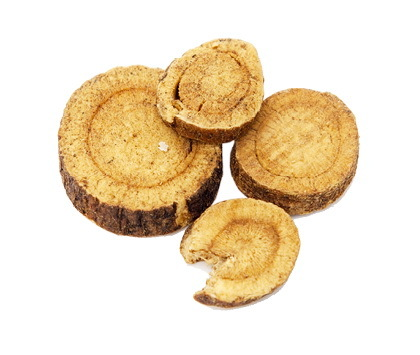
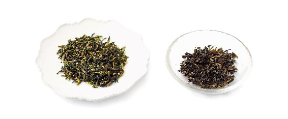
如果平时早上脸不肿，熬夜、吃夜宵后第二天早上起来脸会有点水肿，可以喝薏米瓜仁茶来帮助消肿。
如果每天起床都脸肿，则要坚持喝一段时间薏米消肿茶（见本书对症调养篇289页）。
【原料】
炒薏米250克、炒冬瓜子50克、陈皮50克。
【做法】
【功效】
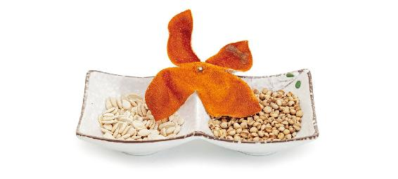
允斌叮嘱
孕妇忌食薏米。脾胃虚寒的人也要少吃。
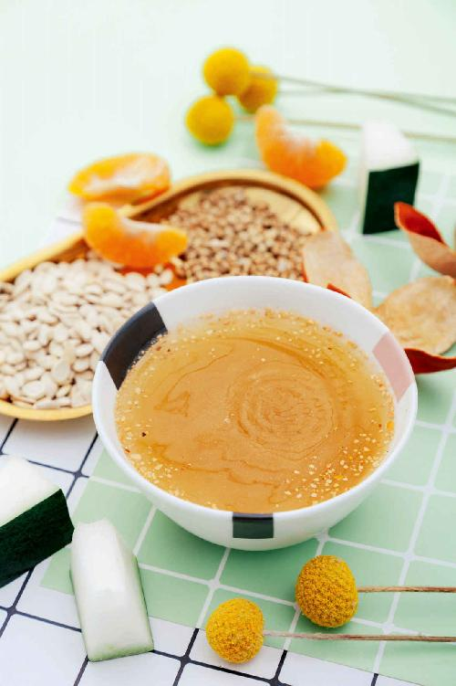
舌尖长泡与口腔溃疡不同，后者是湿毒，前者是心火。当人压力大的时候，心火一上来，舌尖会很快起泡。
舌尖经常长泡的人，可以在夏天吃西瓜时，将外皮翠绿的那一层薄薄地削下来，晒干，装入茶包袋，随时用来应急。
【原料】
西瓜翠衣100克（干品）、蜂蜜。
【做法】
【功效】
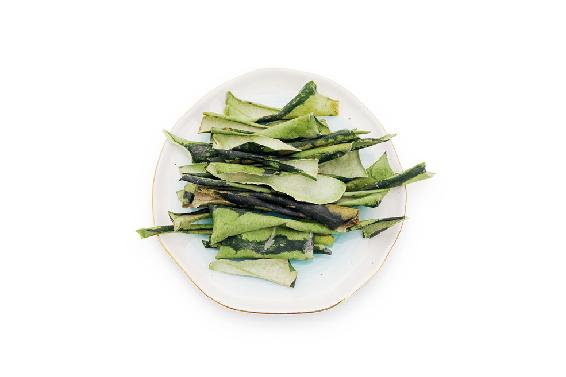
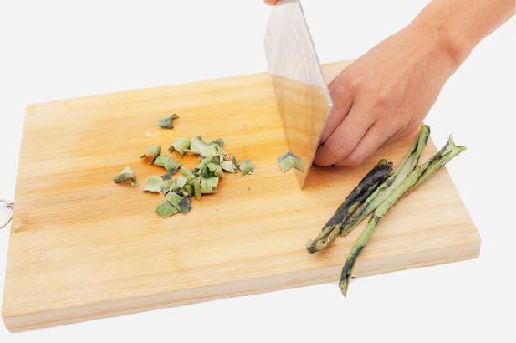
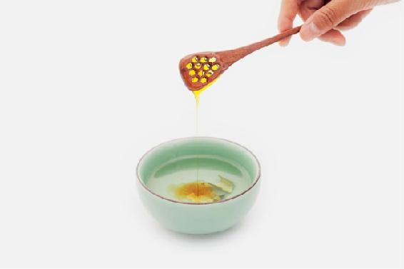
前几天我舌头长了一个小白点，很疼，正好老公买了一个西瓜回来，我就看了老师的书，说西瓜皮煮水加冰糖（也可加蜂蜜）可以调理，我赶快试了起来，煮开喝了一杯。今天起来到现在没事了，神奇的效果。
——27群读者
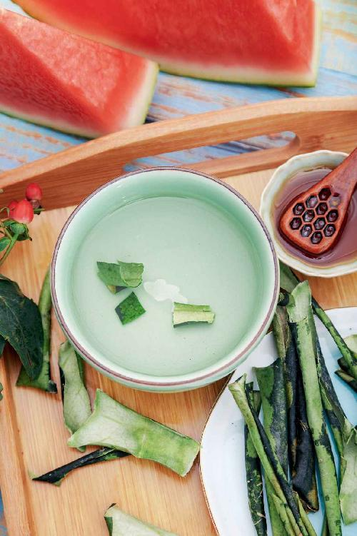
压力和焦虑最容易使人上心火。
急性的心火一般有这几种症状：
口舌生疮。舌头或者口角长疮，很可能是心火旺的表现。很多人一吵架嘴上便会起一串大泡，这也是急火攻心造成的。
心悸失眠。当火毒停留于心，睡眠就会受到影响，晚上睡到一半容易醒来，醒时觉得烦热心悸，并且再睡的时候觉得心口有点烦闷。
焦虑不安。有些人在考试前思虑过多、精神压力大，也会导致心火旺盛，造成精神紧张、心烦易怒、焦虑不安。
当有急性的心火上来的时候，可以喝这杯茶救急。
【原料】
莲子心30克、绿茶30克。
【做法】
【功效】
清心火、降血压，适合血压高同时感觉心烦、脸红、头晕的人。
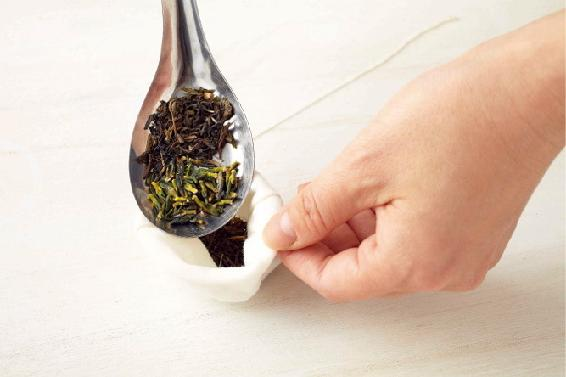
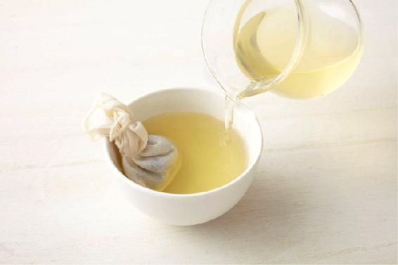
允斌叮嘱
——吉祥鱼
——42群读者
——meiyan
——27群读者
——北京-瑞
——43群读者
——乐观
——45群王丽
——5群瑞
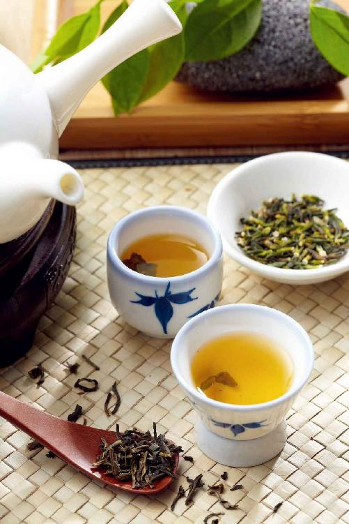
新鲜桂花泡茶，香气令人沉醉，而且舒肝养胃，使人不易产生难闻的口气。
为了能随时享受到桂花的香气，我们可以用盐来保存，或者腌制成桂花蜜。
桂花也是养肺的，它是温养。一般来讲，花的药性以寒凉居多，但桂花与玫瑰一样是温性的。秋季人容易咳嗽，很多人一咳嗽就想到炖梨吃。但如果嗓子不疼只是发痒，痰色发白（这种是寒痰），就不可以用梨，倒是可以用桂花泡茶来喝，有化痰止咳喘的功效。
【原料】
新鲜桂花250克、梅子酱50克、蜂蜜500克。
【做法】
【功效】
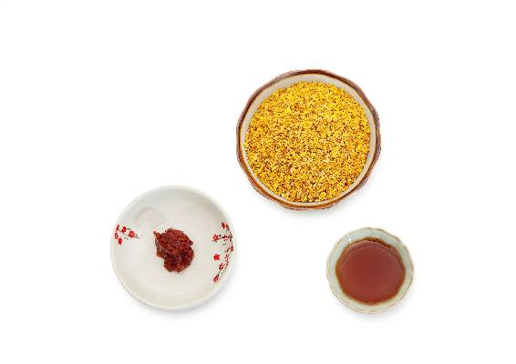
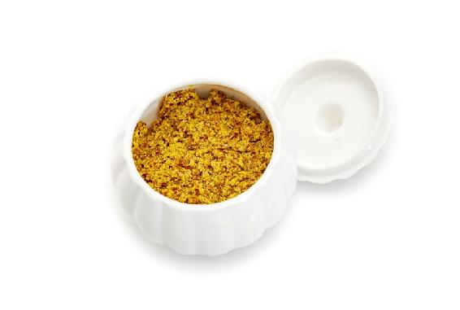
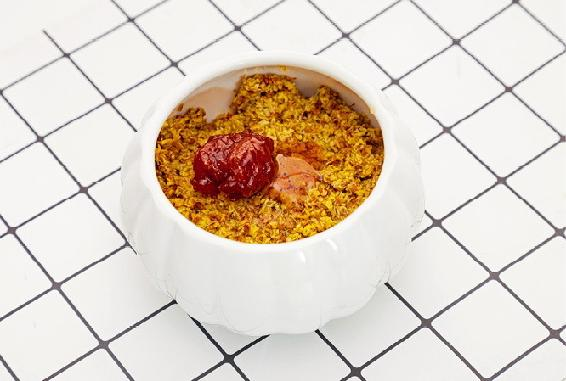
允斌叮嘱
梅子酱的做法可以参考《吃法决定活法》（115页）冰梅酱的做法。
读者评论
——荷叶
——Mahdⅰs小公主
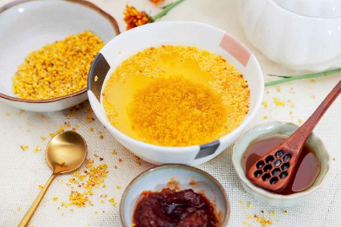